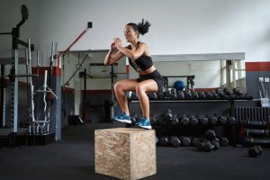
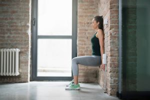

logo
Glutes:
Their biggest job is in keeping us upright and pushing our bodies forward.Strong gluteals are important for proper pelvic alignment, propulsion during walking and running, and even standing on one leg.
Gluteals also help support the lower back during lifting, and help prevent knee injuries.
Box squats:

Imaginary chair:

Box squats:
Place a plyometric box approximately 3 feet behind the squat rack. This allows enough distance for you to comfortably squat without the bar running into the rack. Also, start with either the bar or one very light weight to practice proper form. This movement uses less weight than the regular squat.
Next, step under the bar and position yourself so the bar is on your upper back (not directly on your neck). It will feel like the bar is on the natural shelf made by your shoulders. Position your feet wider than shoulder-width apart. Unrack the weight and step back so the box is just behind your feet.
Keep your core tight and your feet wide with toes pointed slightly out. Unlock your hips to sit back, then bend your knees as you lower your body down to the box with good control. Keep your weight (center of mass) over your feet and descend until you're sitting.
Think of pushing your knees out slightly as you lower to keep them in line with your feet. Some lifters refer to this as screwing your feet into the ground. This ensures your knees won't cave in as you lower and raise, which puts undue stress on your knees. Allow yourself to sit on the box for a 1-2 count but keep your trunk tall and active to continue holding the weight.
Then slightly hinge forward at your hips as you drive yourself upward squeezing your glutes and hamstrings to lift. Return to the upright position. Perform 6-12 repetitions for 3-4 sets.
Imaginary Chair:
The imaginary chair or wall sit is a means of exercise or punishment, where one positions themselves against a wall as if seated.
A wall sit specifically refers to an exercise done to strengthen the quadriceps muscles.[1] The exercise is characterized by the two right angles formed by the body, one at the hips and one at the knees. The person wall sitting places their back against a wall with their feet shoulder-width apart and a little ways out from the wall. Then, keeping their back against the wall, they lower their hips until their knees form right angles.
This is a very intense workout for the quadriceps muscles, and it can be very painful to hold this position for extended periods.
Benefits
Wall sitting primarily builds isometric strength and endurance in glutes, calves, quadriceps, hamstrings, and adductor muscles.
Four repetitions of a two-minute wall sit followed by two minutes' rest, three times per week, was recommended to reduce blood pressure.